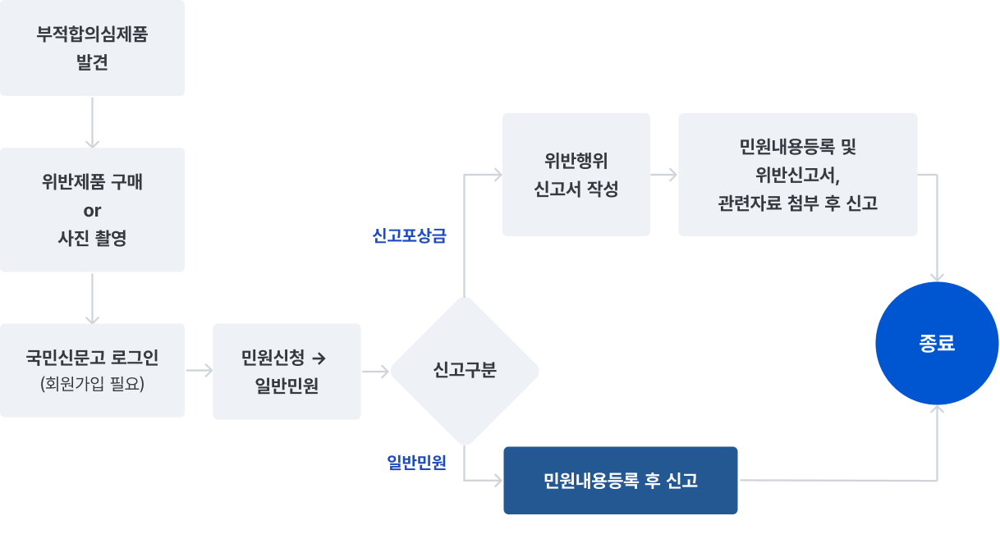

화학제품 관련 상담·신고
소비자가 생활 환경 주변(마트, 백화점, 온라인 쇼핑몰 등)에서 불법적인 생활화학제품을 발견할 경우, 이를 신고할 수 있도록 마련된 제도입니다. 소비자는 생활화학제품의 신고번호 미기재, 안전기준확인마크 미표시, 필수 표시사항 누락 등의 위반 사례를 발견하면, 국민신문고 웹사이트나 앱을 통해 신고할 수 있습니다. 신고 시에는 제품 사진, 라벨 정보 등 증거를 함께 제출해야 하며, 신고가 인정될 경우 포상금도 받을 수 있습니다.
신고 절차

신고포상금 지급
「생활화학제품 및 살생물제의 안전관리에 관한 법률(이하 "화학제품안전법")」에 따라 위반 제품을 판매·유통한 자를 신고하는 경우 포상금을 지급하고 있습니다.
포상금 지급대상
다음의 사업자를 신고한 자
- 「화학제품안전법」 제35조를 위반하여 안전기준 적합 확인·승인을 받지 않고 제조·수입한 안전확인대상생활화학제품을 판매한 자
- 「화학제품안전법」 제35조를 위반하여 표시기준을 위반한 안전확인대상생활화학제품을 판매한 자
- 「화학제품안전법」 제37조제1항을 위반하여 제품의 회수, 폐기 등 조치명령을 받은 위반제품을 제조·수입·판매·유통한 자
포상금 신청방법
다음의 서류를 갖추어 국민신문고(https://www.epeople.go.kr)를 통해 민원 신청
- 안전확인대상생활화학제품 및 살생물제 위반행위 신고서
※ 「안전확인대상생활화학제품 및 살생물제 신고포상금 지급에 관한 규정」 별지 제1호(공지사항 27번 게시글 '안전확인대상생활화학제품 및 살생물제 신고포상금 지급에 관한 규정(환경부 고시 제2020-290호)' 참고) - 위반행위 증거 자료
포상금 지급금액
- 위반행위에 따라 건당 5만~30만 원
- 1인당 연간(1.1.~12.31. 기준) 최대 지급금액: 300만 원
※ 1인당 연간 지급한도를 초과하였거나, 포상금 지급 예산이 소진된 경우에는 포상금 지급 불가
지급 예외
다음 중 하나에 해당되는 경우, 포상금 미지급함
- 타 법령 등에 따라 같은 내용으로 포상금이 지급된 경우
- 신고내용이 언론 등 사전에 공개된 내용이거나, 이미 조사 또는 행정처분이 진행 중인 경우(조사, 행정처분이 완료된 경우 포함)
- 익명 또는 타인의 명의로 신고한 경우
- 단순히 인터넷 검색 결과를 신고하여 위반행위의 정확성이나 증거자료의 신빙성이 떨어지는 경우
- 의도적으로 법규 위반을 조장, 유인하여 위반행위자를 신고한 경우
- 한국환경산업기술원 임직원, 안전확인대상생활화학제품 시장감시 업무 관련자(시장감시단 포함), 관련 공무원 등이 직무상 인지하여 신고한 경우
- 포상금을 목적으로 미리 공모하는 등 부정한 방법으로 신고한 경우
- 위법 또는 부당한 방법으로 증거자료 등을 수집하여 신고한 경우
관련 법령
- 「화학제품안전법」제52조의2(포상금)
- 「화학제품안전법」시행령 제37조의2(포상금)
- 「안전확인대상생활화학제품 및 살생물제 신고포상금 지급에 관한 규정」(환경부 고시 제2020-290호)